Budapest's ruin bars — romkocsmák — are one of Europe's most unique nightlife phenomena. Born in the early 2000s when entrepreneurs turned crumbling Jewish Quarter buildings into bohemian bars with mismatched furniture, street art, and cheap drinks, they've become the city's most iconic cultural export.
We analyzed hundreds of Reddit posts from r/budapest, r/hungary, r/travel, and r/solotravel to find the bars that actual locals and experienced travelers recommend. Fair warning: locals will tell you most "real" ruin bars are dead. But the spirit lives on — you just need to know where to look.
📊 How we built this list
We analyzed 200+ Reddit posts and 1,500+ comments across r/budapest, r/hungary, r/travel, r/solotravel, and r/EuropeanTravel — spanning 2018 to 2025. Bars were ranked by how frequently they were recommended by independent users. Every spot on this list was mentioned in at least 3 separate threads. We weighted long-term Budapest residents' picks more heavily than first-time visitor posts.
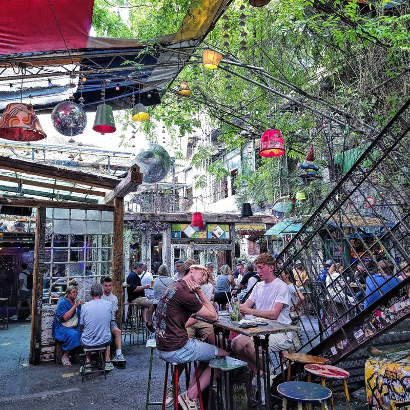
What to order: Housemade pálinka (Hungarian fruit brandy) — it's what the place is known for. Also try a fröccs (wine spritzer), Hungary's national summer drink. Beer is fine but not special here.
"Szimpla Kert is the baseline for ruin pub and even though you won't hear a lick of Hungarian (particularly on the weekends) because it's virtually all tourists, it is huge and you can always find places quiet enough to talk."
— r/budapest · posted February 2024
"If I have foreign friends over, I always take them to Szimpla in the afternoon (around 3-4pm), when it's more relaxed."
— r/budapest · posted May 2024
tabiji verdict: The original ruin bar and the last true survivor. Yes, it's touristy. Go anyway — but go in the afternoon. The multi-level maze of rooms, bathtub seating, and eclectic art is genuinely impressive. Sunday morning farmers' market is a hidden gem within the gem.
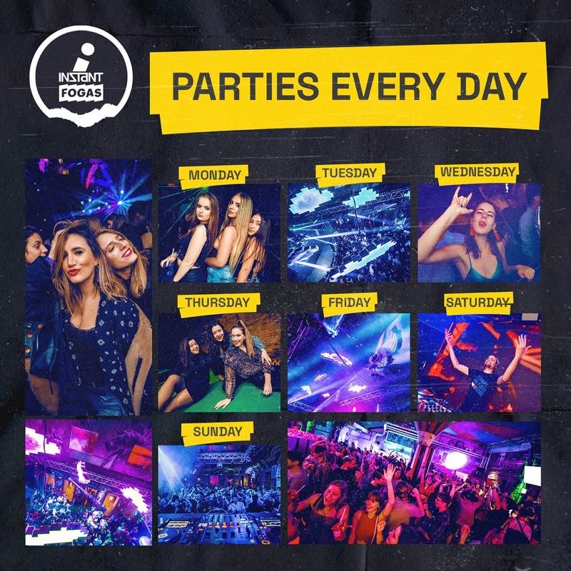
What to order: Cheap beer or mixed drinks — this is a volume place, not a cocktail bar. Grab a Dreher or Soproni for 900 Ft and explore the 20+ rooms.
"Instant is more of a party place I wouldn't go as a family. As long as you arrive before 7 PM, you won't need to wait in line."
— r/budapest · posted May 2024
"Only one remaining is Szimpla. Instant / Fogas is not what it was many years ago (much better on Nagymezo utca) so I don't consider it a ruin bar anymore. However, you'll love it as a tourist."
— r/budapest · posted September 2023
tabiji verdict: The mega-complex of Budapest nightlife. 20+ themed rooms across two connected buildings, from chill lounges to thumping dance floors. Locals don't consider it a "real" ruin bar anymore, but for tourists wanting a wild night out with ruin bar aesthetics, this is it. Come after 11 PM on weekends.
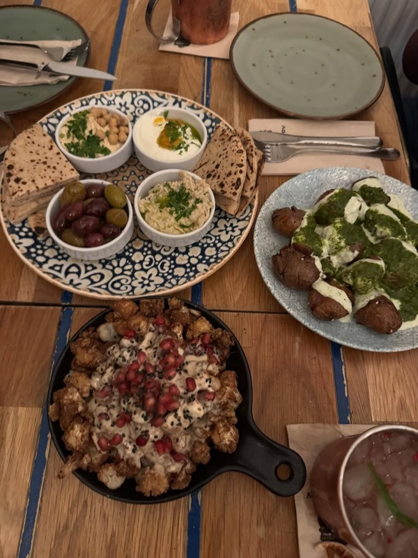
What to order: Craft cocktails and Middle Eastern-inspired food — the hummus and shakshuka are famous. Try the signature cocktails; this is one of the few ruin-adjacent spots where the drinks are actually excellent.
"There are no more ruin bars, just bars (and sometimes a restaurant like Mazel Tov) that market themselves as ruin bars. Only Szimpla is the one still standing as a vestige."
— r/budapest · posted May 2024
tabiji verdict: More upscale restaurant-bar than ruin bar, but the gorgeous greenhouse courtyard with string lights and lush plants has that magical ruin bar DNA. Book ahead — it fills up fast. Perfect for a date night or a group dinner before hitting the grittier spots.
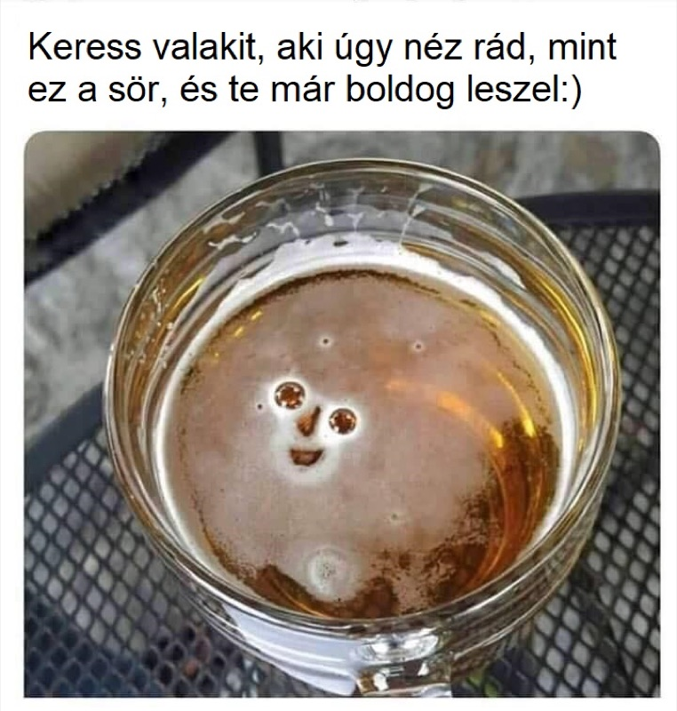
What to order: Hungarian craft beer — they have 20+ taps rotating local breweries like MONYO, Horizont, and Hedon. Try a flight to sample the best of Hungary's booming craft scene.
"Another place is Élesztő, a craft beer place with a ruin pub environment... quite a bit more quiet than Szimpla and you can reserve a table."
— r/budapest · posted February 2024
tabiji verdict: If you care about what you're drinking, this is your spot. A sprawling courtyard in District VIII with rotating craft taps and food trucks. The vibe is ruin-bar-meets-beer-garden, but the crowd is more local and the beer is leagues better than anything on Kazinczy utca. Reservable tables are a huge plus.
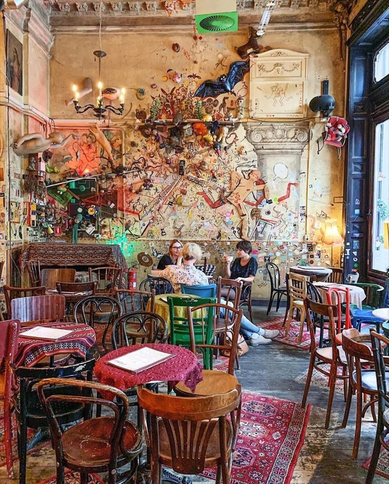
What to order: Wine or a cocktail while you take in the decor. The interior is the real attraction — every surface is covered in eclectic art and vintage objects. Also great for coffee during the day.
"For a laid back place to drink, visit Lámpás, Csendes Vintage Bar, Jelen or Pótkulcs."
— r/budapest · Budapest nightlife thread
tabiji verdict: The chillest spot on this list. Csendes means "quiet" in Hungarian, and it delivers — this is where you go for conversation, not clubbing. The maximalist decor rivals Szimpla for visual overload. Great daytime café too. Technically not a ruin bar, but the same DIY spirit.
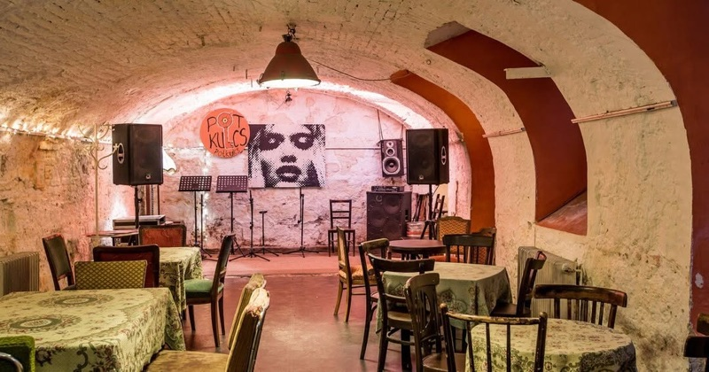
What to order: Cheap draught beer — Pótkulcs is all about affordability. A large beer for 600–800 Ft in the center of Budapest. They also host folk dance circles and world music concerts.
"Pótkulcs, Kisüzem, etc are much more of the latter [local spots vs tourist bars]."
— r/budapest · posted August 2024
"If I'm being generous Pótkulcs could be called that [a ruin bar], and they have world music, jazz and folk concerts with 'folk dance circles'."
— r/budapest · Underground ruin bar thread, 2020
tabiji verdict: The local's local bar. Dirt-cheap drinks, folk concerts, and zero tourists. It's been a Budapest institution since the early days. The mismatched furniture and courtyard give ruin bar vibes without the ruin bar markup. Come for a folk dance táncház night — it's an unforgettable experience.
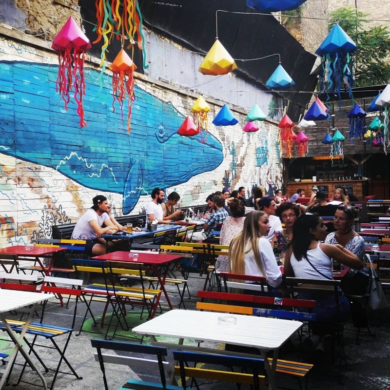
What to order: Draught beer or a simple fröccs. Kuplung is unpretentious — order what's cheap and enjoy the graffiti-covered courtyard.
"The major ruinpubs are the Instant-Fogasház complex, Szimpla and Mazel Tov is popular as well. More 'local' ruinpubs are Kuplung and Ellátó."
— r/budapest · Budapest nightlife thread
tabiji verdict: Kuplung ("clutch" in Hungarian) is the gritty middle ground — more local than Szimpla, less chaotic than Instant. The graffiti-covered courtyard with street art murals is photogenic in that perfectly rundown way. Right on Király utca so easy to combine with a bar crawl.
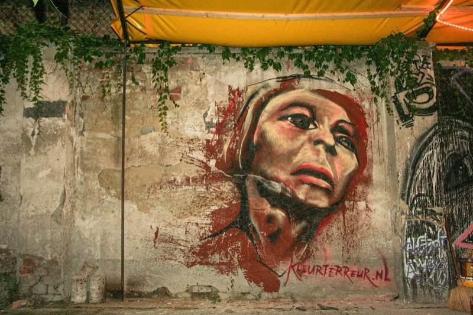
What to order: Their house-brewed beer and Mexican food — an unexpected combo in Budapest that works surprisingly well. The tacos are legit.
"Ellátó Kert has old relics, Mexican banners (they serve Mexican food), and happy-coloured tables and chairs. They serve a really good home brewed beer. Most of the clientele was local."
— bbqboy.net · Ruin bar guide
tabiji verdict: Ruin bar meets taqueria — and the combo slaps. Steps from Kazinczy utca but with a more local crowd. The open-air courtyard with colorful furniture and a beat-up piano is peak ruin bar aesthetic. House-brewed beer is a nice touch. Great for an early evening stop.
What to order: Beer or wine in the garden, plus Hungarian comfort food from the attached Kőleves restaurant. The goulash soup is a perfect pre-drinking fuel.
tabiji verdict: A chill garden bar right on Kazinczy utca — less hectic than Szimpla but more polished than Kuplung. The attached restaurant serves solid Hungarian food, making it a great dinner-and-drinks combo. The colorful courtyard with murals is lovely in summer.
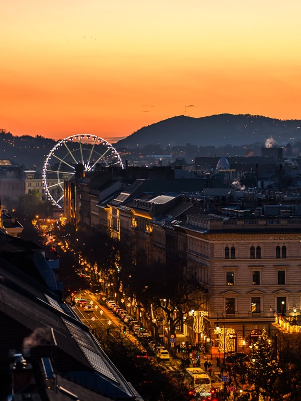
What to order: A cocktail at sunset — the view over Pest rooftops to the Buda hills is what you're paying for. Gin & tonics and spritzes are solid. Skip the food.
tabiji verdict: Not a ruin bar, but every ruin bar crawl should end up here. The 360-degree panoramic view from Andrássy út is stunning, especially at golden hour. Prices are higher than street level but still reasonable by European rooftop standards. Open seasonally (April–October usually).
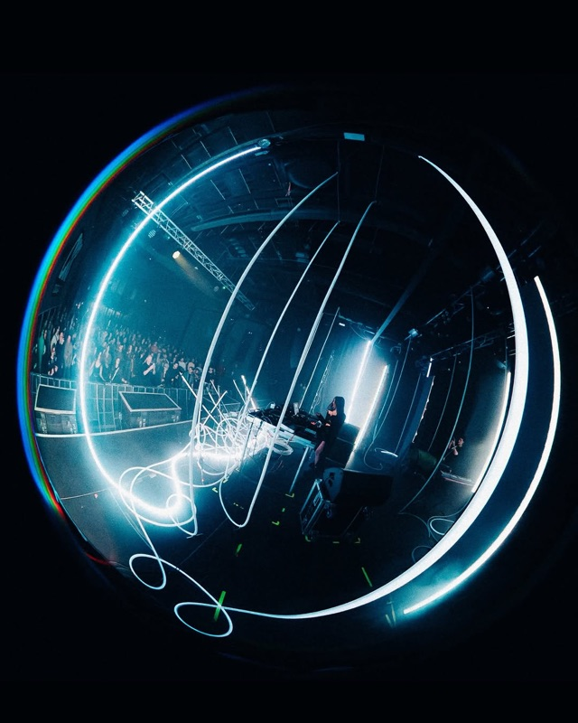
What to order: Whatever's on draught while catching a live band. They host everything from punk to electronic to Hungarian folk fusion. Check their event calendar before visiting.
"For the live music lovers out there, Dürer Kert is your go-to spot."
— justapack.com · Best ruin bars guide
tabiji verdict: Budapest's best live music venue, tucked behind Városliget (City Park). More concert hall than ruin bar, but the outdoor beer garden has serious ruin bar energy. Worth the trek from District VII if there's a good gig on. Check the lineup — Hungarian indie bands here are a revelation.

What to order: Beer or a simple cocktail on the roof — the view over the Corvin department store and the cityscape is the main attraction. DJ nights bring solid electronic music.
"Do not omit visiting other interesting places such as Mazel Tov, Fogas Ház & Instant-Fogas, Corvin Club & Roof Terrace."
— originalpubcrawls.com · Reddit guide for beginners
tabiji verdict: A rooftop bar perched atop a communist-era department store — very Budapest. The terrace offers great views and the occasional DJ set. Less polished than 360 Bar, more authentic in that slightly-crumbling way that defines the ruin bar spirit. Seasonal.
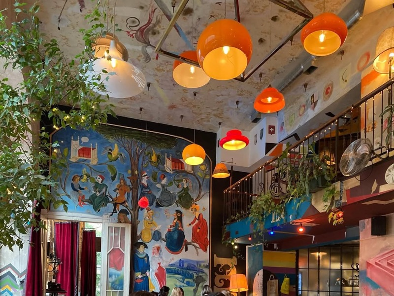
What to order: Craft beer or natural wine with some food — they serve excellent light bites. Great for brunch too.
"If you want the ruin pub look but a bit fancier you can try Szatyor bár on the Buda side, you can grab a nice bite there too."
— r/budapest · posted August 2024
tabiji verdict: The Buda-side escape. If you're tired of the District VII tourist circuit, cross the river to Bartók Béla út and find this charming bar-café hybrid. Ruin-adjacent decor with better food and a mellower crowd. Locals love it.
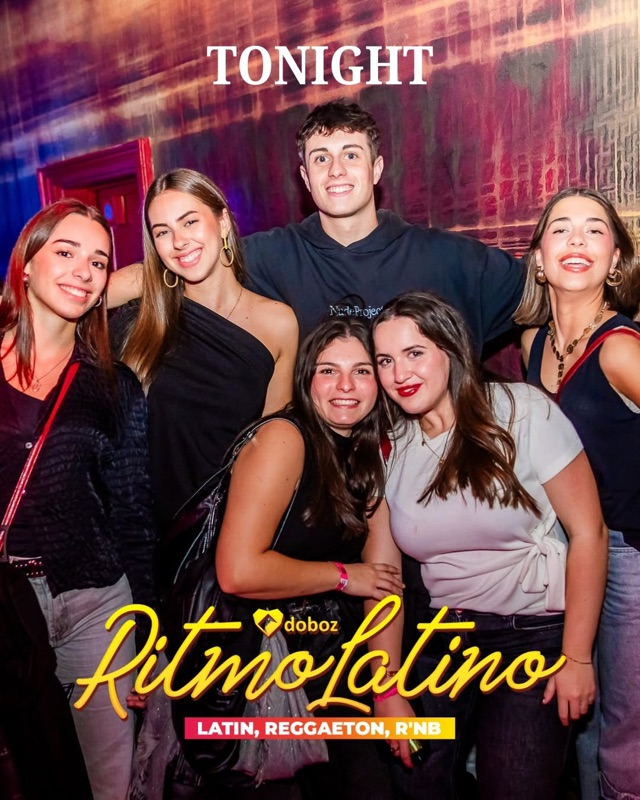
What to order: Cocktails or beer — they're better than most ruin bars at mixed drinks. The tree growing through the middle of the bar is the real attraction.
"Doboz has a tree growing through it, which makes it one of the more photogenic ruin bars. Drinks are decent and the courtyard is great in summer."
— r/budapest
tabiji verdict: Doboz ("box" in Hungarian) is right in the heart of the Jewish Quarter. The centerpiece — a tree growing through the building — is iconic. It morphs from chill bar to party spot as the night goes on. Less intense than Instant, more happening than Kuplung. Solid middle ground.
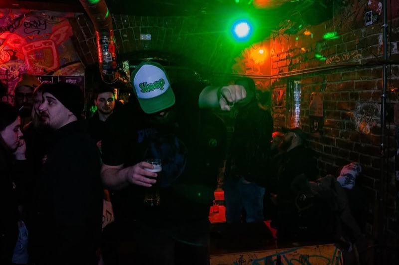
What to order: Cheap beer — this is a no-frills drinking spot. A large beer for under 1,000 Ft in the center of town.
tabiji verdict: A locals-only dive with ruin bar DNA. No English menus, no tourist groups, just Budapestians having cheap drinks. If you want the authentic experience of what ruin bars felt like before they became famous, Vittula is your closest bet.
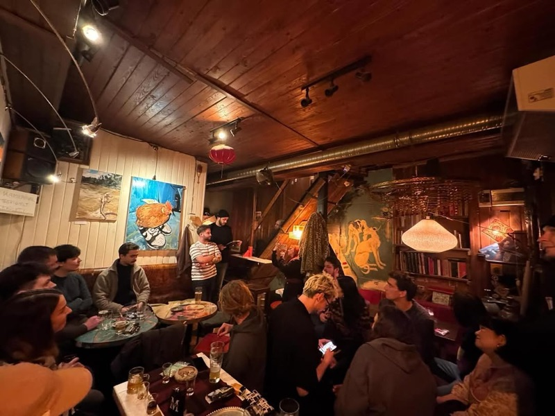
What to order: Cash only — bring forints. Simple beers and spirits. The experience is the draw, not the drink menu.
tabiji verdict: The speakeasy of the ruin bar world. Ring a bell, sign up as a "member," pay cash only. Sounds pretentious but it's actually just a very chill, hidden courtyard bar that doesn't want to become the next Szimpla. Worth the effort if you want to feel like you discovered something.
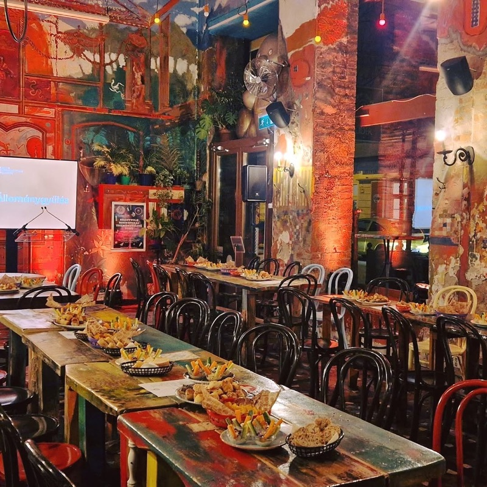
What to order: Cocktails — this is one of Budapest's best cocktail bars. Try their seasonal specials or ask the bartender to make something off-menu based on your taste.
"Púder on Ráday utca — great cocktails in a beautifully designed space. It's got that vintage Budapest feel without being a tourist trap."
— r/budapest
tabiji verdict: Located on lively Ráday utca (Budapest's restaurant row), Púder brings cocktail craftsmanship to the ruin bar aesthetic. Vintage furniture, moody lighting, and drinks that are actually well-made — not just cheap. A grown-up alternative for those past the backpacker bar phase.
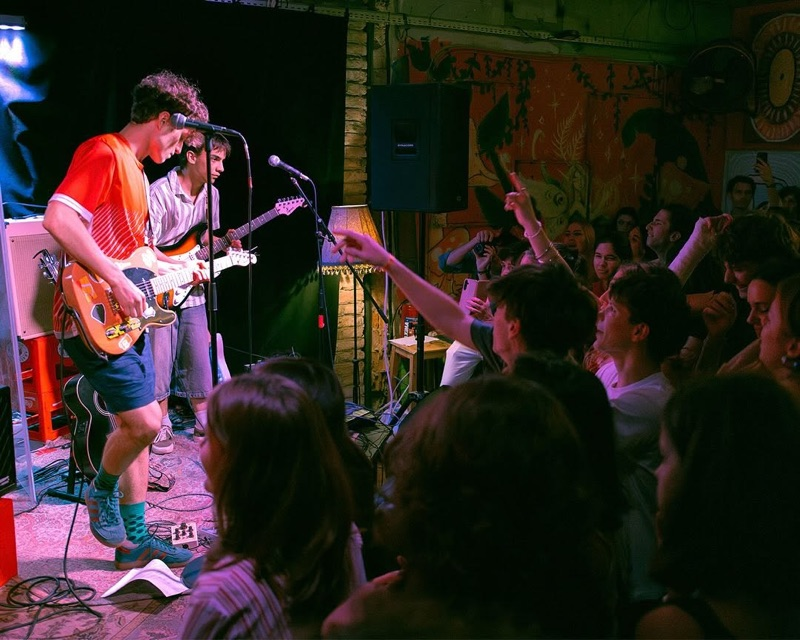
What to order: The cheapest beer they have — prices here are student-friendly. Simple drinks in a quirky, artsy setting.
tabiji verdict: A studenty, artsy, dog-friendly alternative bar in District IX. Cheap drinks, weird decor, and zero pretension. If you want to drink where actual Budapest university students hang out rather than where tourist pub crawls go, Manyi is perfect. The polar opposite of 360 Bar — and that's a compliment.
Frequently Asked Questions
What are ruin bars and why is Budapest famous for them?
Ruin bars (romkocsmák) are bars set up in abandoned buildings and courtyards across Budapest — mostly in the Jewish Quarter (District VII). They started in the early 2000s as a grassroots response to urban decay, filling derelict spaces with mismatched furniture, street art, and cheap drinks. Szimpla Kert (2004) is the original. While many early ruin bars have closed or evolved, Budapest remains the world capital of the genre.
Is Szimpla Kert worth visiting or is it too touristy?
Yes, it's worth visiting despite being very touristy. Reddit consensus: go in the afternoon (3–4 PM) when it's relaxed and you can appreciate the incredible decor. Evenings get packed with tourists and pub crawls, but the sheer scale and creativity of the space make it a must-see at least once. The Sunday morning farmers' market is a hidden gem.
How much do drinks cost in Budapest ruin bars?
A beer typically costs 800–1,500 Ft ($2–4 USD). Cocktails run 2,000–4,000 Ft ($5–10). Pálinka shots are 800–1,500 Ft. Prices are higher at tourist spots like Szimpla and 360 Bar, and cheaper at local favorites like Pótkulcs and Manyi (beer from 400–600 Ft). Budapest remains one of Europe's best nightlife values.
Are there still "real" ruin bars in Budapest?
Locals on Reddit are blunt: most original ruin bars are dead or tourist traps. Szimpla is the last true survivor. But the spirit lives on in places like Pótkulcs, Kuplung, Ellátó Kert, and Vittula. For craft beer in a ruin-style setting, Élesztőház is the top pick. The key is to venture beyond the main tourist streets.
What's the best area for ruin bars in Budapest?
District VII (Erzsébetváros / the Jewish Quarter) is ground zero — especially the streets around Kazinczy utca, Akácfa utca, and Klauzál tér. You can walk between 5–6 bars in one evening. For less touristy spots, head to District VIII (Élesztőház area), District IX (Ráday utca), or across the river to Bartók Béla út in Buda.
When is the best time to visit Budapest's ruin bars?
For sightseeing and photos, visit 2–5 PM when bars are open but uncrowded. For nightlife, arrive after 10 PM Thursday–Saturday. Summer (May–September) is peak season with outdoor courtyards in full swing. Many ruin bars reduce hours or close outdoor areas in winter, but indoor spaces stay open year-round. Arrive before 7 PM at popular spots to avoid lines.